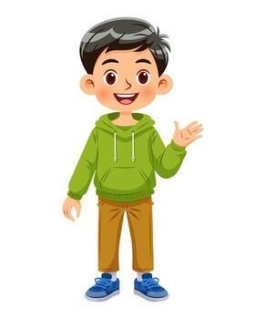

Hi, I’m Abdul Ahad,
a curious student
exploring technology.
I’m a Class 11 Science student who loves exploring technology, learning new things, and understanding how the digital world works.

More than a student.
I’m currently studying Science in Class 11, but my curiosity goes beyond textbooks. I enjoy discovering technology, experimenting with new digital tools, and understanding how ideas become real products.
CURIOUS
Always asking how things work under the surface, from algorithms to interfaces.
LEARNING
Constantly exploring new technologies, software paradigms, and computational ideas.
BUILDING
Interested in turning abstract concepts into useful, tangible digital experiences.
What I'm curious about
A snapshot of the domains and spaces that keep me up learning late into the night.
Artificial Intelligence
Exploring how AI is changing the way we learn, create, and work daily.
Web Development
Interested in understanding how websites and fluid digital experiences are engineered.
Programming
Learning core fundamentals of code logic, data, and structured problem solving.
Technology & Platforms
Exploring new tools, operating systems, cloud paradigms, and emerging tech revolutions.
Design & Ergonomics
Interested in how engineering precision and high-grade aesthetic harmony meet in software.
My journey so far
Building a strong conceptual foundation in physical sciences, mathematics, and analytical reasoning while exploring technology alongside academics.
Learning about AI models, digital tooling, programming primitives, and the rapidly shifting mechanics of the modern web ecosystem.
Keep learning. Keep experimenting. Keep building.
Currently exploring
AI & Emerging Technology
Understanding how artificial intelligence models, transformers, and automated tools are reshaping the future of human learning and product development.
const abdul = { mindset: "curious", focus: ["Science", "AI", "Web"], iterate: () => "growth" };
Coding
Learning programming fundamentals, computational thinking, and hands-on problem solving.
Digital Products
Deconstructing how useful, delightful digital products are conceived, designed, and delivered to users around the globe.
Tech Tools & Workflows
Experimenting with modern productivity apps, developer command-line utilities, and creative software.
“My curiosity is bigger than my classroom.”
I believe learning doesn't stop when the class ends. Every new technology, idea, or problem is an opportunity to learn something new.
Have an idea? Let’s connect.
I’m always interested in learning, exploring new ideas, and connecting with people who are passionate about technology.